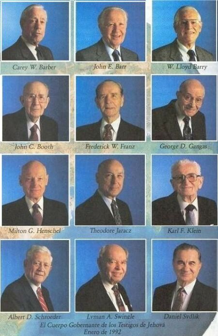

« Aspectos generales | Índice | Trabajando y construyendo bienes para la Watch Tower »
La rígida estructura orgánica de esa agrupación, está conformada de abajo hacia arriba por: Congregaciones; Circuitos; Distritos; Sucursales y Zonas.
Según se desprende de su literatura, su organización “no es hecha por hombres; es de Dios”.
Todo ello dirigido y controlado por la Sociedad (organismo secreto con todas las características de una auténtica sociedad mercantil de corte de Sociedad Anónima), conformada hasta 1973 por 427 socios de Pensilvania, y 70 de Nueva York, que es de donde salen sus representantes “visibles”, llamados “El Cuerpo Gobernante”, conformado por 12 individuos: Presidente, Vicepresidente, Secretario-Tesorero (éstos son los “Oficiales”) y Directores el resto, aunque el número de integrantes puede variar.
![[Sede central de la Watch Tower]](Imagen1.jpg)
A dicho “Cuerpo Gobernante”, se le conoce también como:
“El Esclavo Fiel y Discreto”; “La Clase Juan”; “La Clase Celestial”; “El Instrumento visible de Cristo”; “La Raza Escogida”; “Los Príncipes que gobernarán con justicia”; “La capa superior de la clase de los ungidos”; “Los iluminados por los relámpagos de Jehová”; “Los Embajadores del Gobierno Teocrático”; “Los del sacerdocio Real”; “La Mujer de Dios”; “Los de la resurrección instantánea”; “Los mudados en un abrir de ojos”; “Los coherederos del Reino de Cristo”; “Los ungidos de Jehová”; “La Familia Real de Dios Padre”; “Los ciudadanos de los cielos”; “EI conducto terrestre de Dios”; “El Resto de la Manada Pequeña”; etc.
Todas estas autodenominaciones y muchas más, se encuentran diseminadas a lo largo de las diversas publicaciones de varios años. A su vez, todos los nombramientos jerárquicos de Ancianos y Siervos ministeriales, los hace el mismo Cuerpo Gobernante, tomando o no en cuenta los recomendaciones de los diferentes Cuerpos de Ancianos.
Este Cuerpo Gobernante se auxilia por “Comités”, a los cuales controla, y se dividen en: Comité de Servicio; Comité de Redacción; Comité de Publicación; Comité de Enseñanza; Comité del Personal; y Comité de la Presidencia. Todo ello es dirigido y controlado desde Nueva York.
Fuente de las ilustraciones
Imagen 1. El “Vaticano de los TJ” o sede mundial en EU de la WT. Ibíd.; p. 352.
Imagen 2. El cuerpo gobernante. “Los Testigos de Jehová, proclamadores del Reino de Dios”; Watch Tower Bible and Tract Society of Pennsylvania; 1993; Grupo Editorial Ultramar, S.A. de C.V.; p. 116.
« Aspectos generales | Índice | Trabajando y construyendo bienes para la Watch Tower »
Comentarios
Comments powered by Disqus